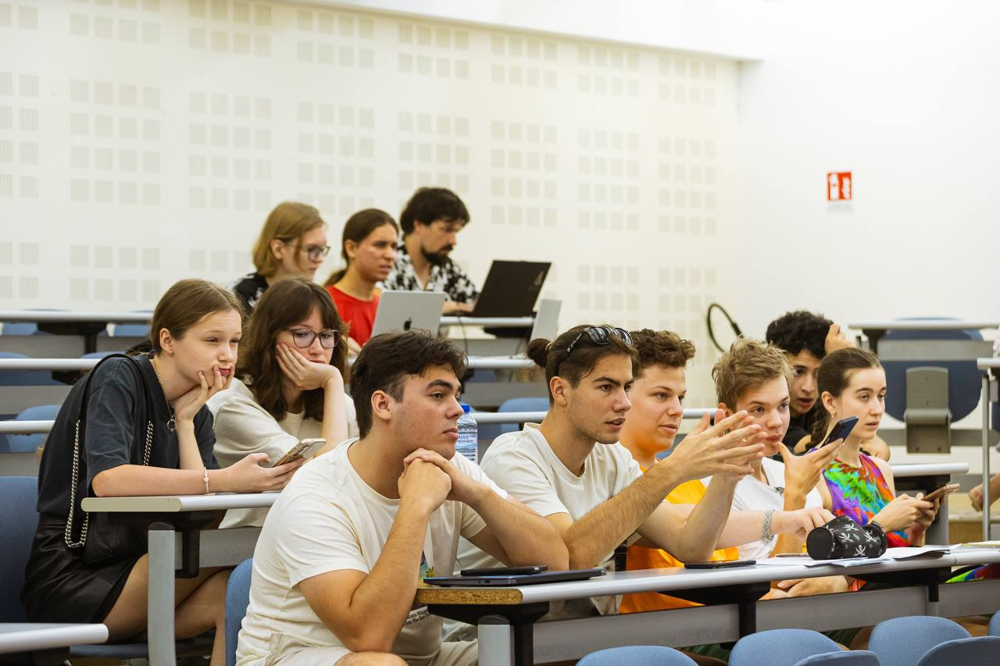
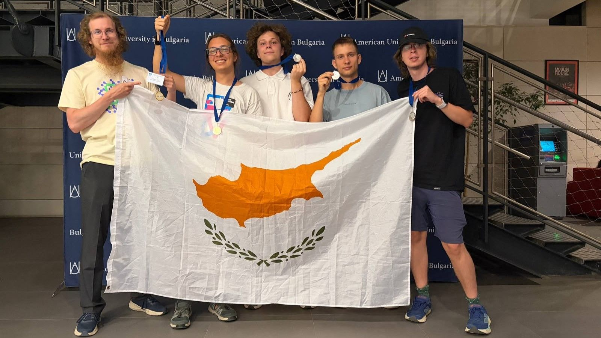
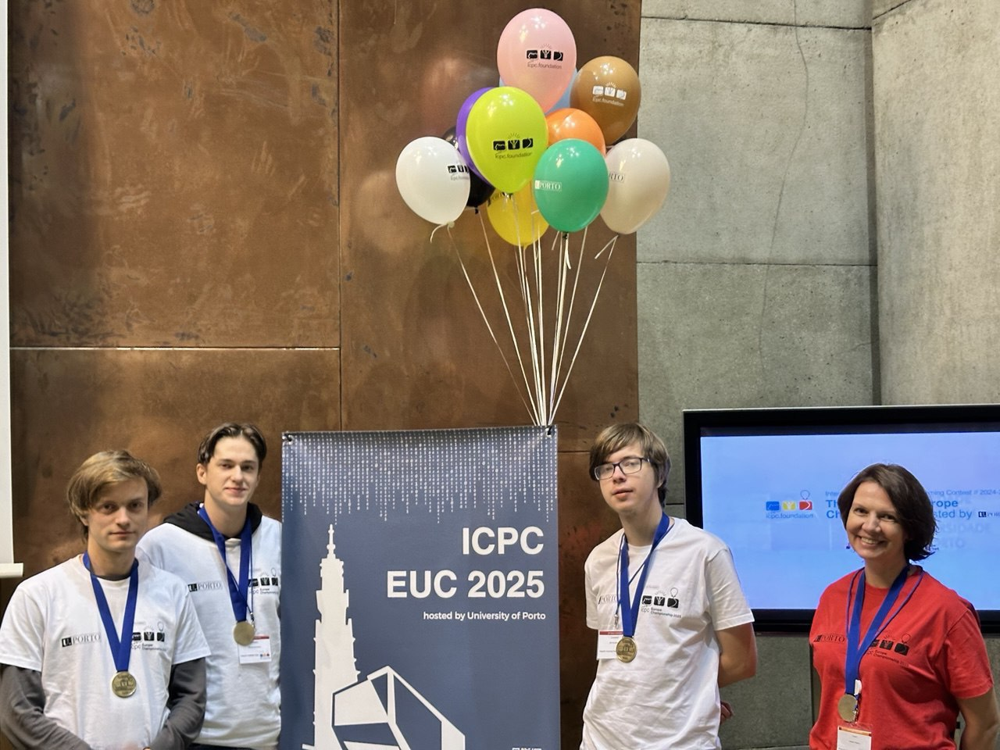
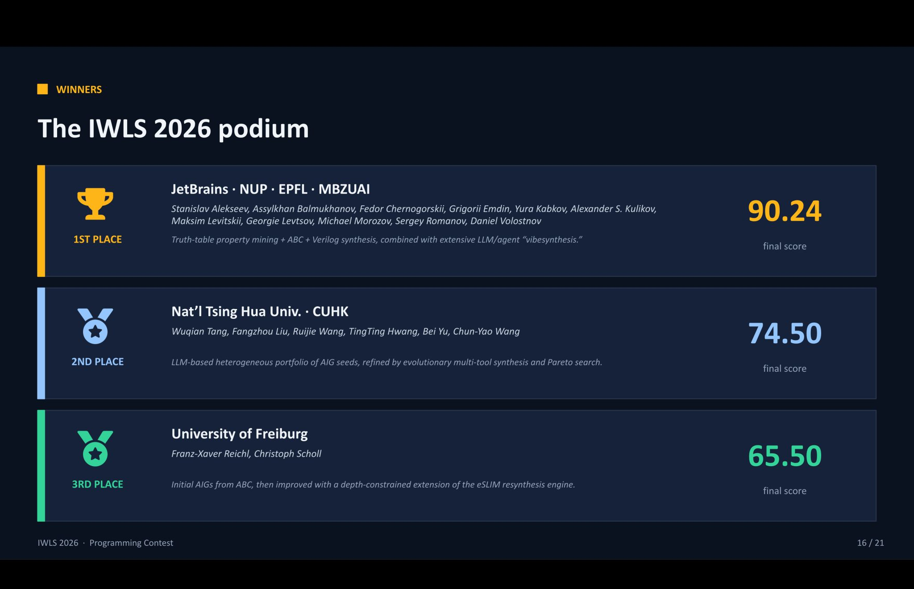
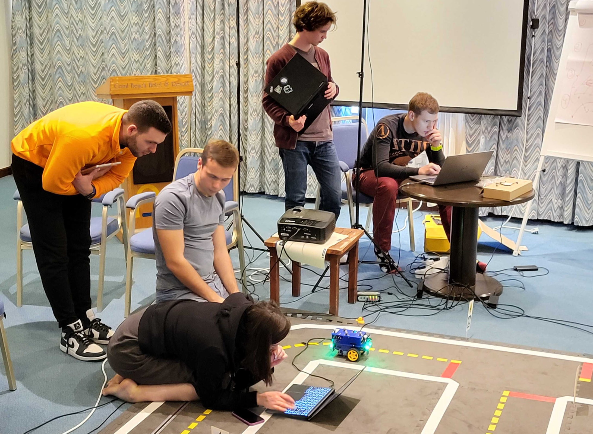
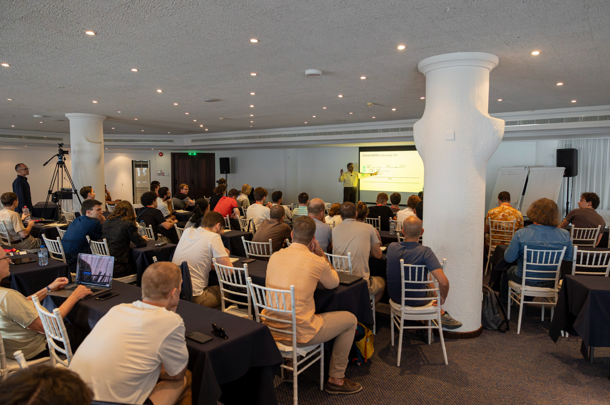
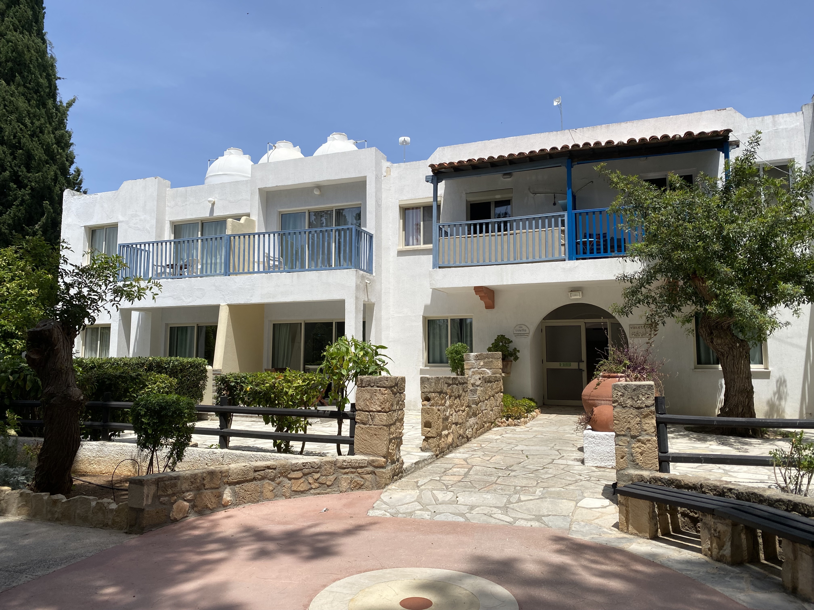
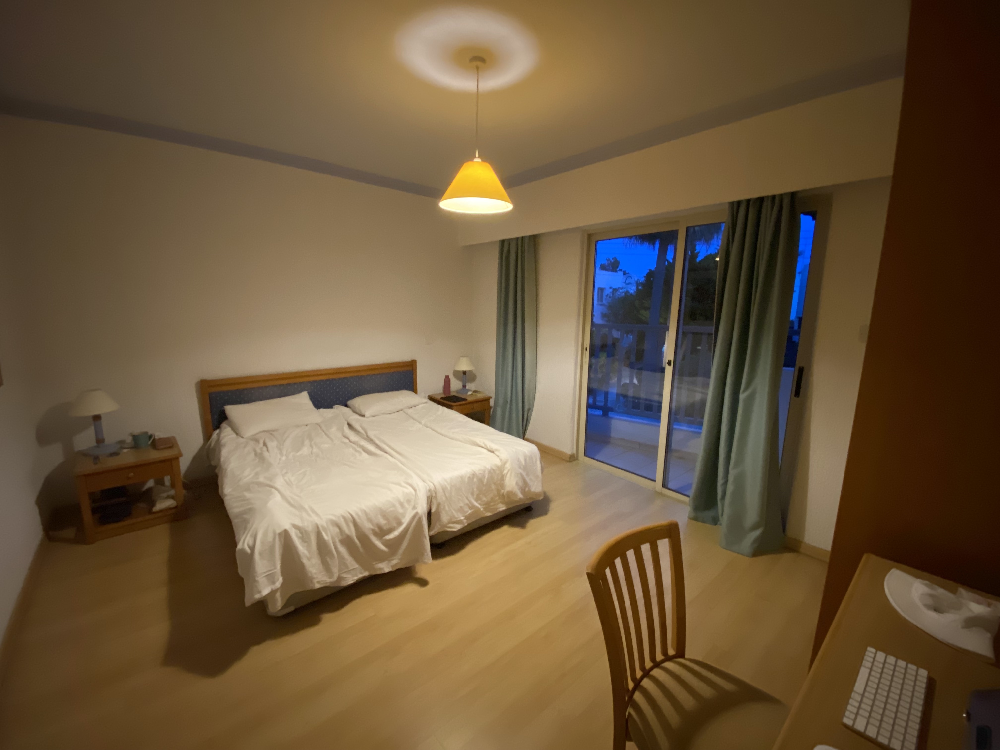

University setting
Study in Cyprus, close to JetBrains offices in Paphos and Limassol, with access to an international academic and engineering community.
Neapolis University Pafos × JetBrains
A rigorous B.Sc. program for students who want deep mathematics, modern computing, machine learning, robotics, research, and industry-grade software practice.
About
The program was launched at Neapolis University Pafos in collaboration with JetBrains. It combines university-level theory with hands-on engineering and research.
Study in Cyprus, close to JetBrains offices in Paphos and Limassol, with access to an international academic and engineering community.

Algebra, analysis, probability, algorithms, theoretical CS, machine learning, systems, databases, programming languages, robotics, and HCI.

The student community includes participants of international olympiads, ICPC, IMC, and research competitions.
Curriculum
The program starts with mathematics, algorithms, and programming, then moves into machine learning, systems, robotics, electives, industrial placement, and research.
Open full curriculum pageProfessors
The program links each course to instructors and makes it easy to discover who teaches what. Detailed instructor data is reused from the course records where possible.
It is important to get to know the professors in advance: their background, public talks, teaching style, and research interests are part of the quality of the program.
Research
Research directions include algorithms, AI, bioinformatics, complexity theory, machine learning, programming languages, and robotics. The goal is not only to learn existing tools, but to produce new ideas and publish them.
Open research pageOlympiads
Students train for programming, mathematics, and research competitions with support from the program community.
Open olympiads page
NUP is the only university from Cyprus whose team advanced to the ICPC World Finals.
At IMC 2026, NUP received two gold and three silver medals and placed 16th worldwide.

The NUP team won first place in the IWLS Programming Contest in 2024 and 2026.
Workshops

On-site competitive programming boot camp for strong university teams.

Project-driven international school with students and professors from different countries.

Fundamental and state-of-the-art topics in distributed systems.
Career
Graduates of JetBrains-supported programs work at Google, JetBrains, Meta, DeepMind, startups, and top universities. The B.Sc. builds the interview foundations and practical project portfolio needed for that path.
Open full career pageScholarship
Each year, selected applicants receive a grant that covers tuition and accommodation, plus a monthly stipend.
Admission 2026
Preparing
Applicants can join free online clubs for school students: AI Club, Coding Club, and Math Club. Recommended preparation topics include logarithms, trigonometry, combinatorics, limits, recursion, induction, and algorithms.
Online Clubs for School Students
Accommodation
Accommodation options include student apartments with access to shared facilities, study areas, and everyday services.



Cyprus
Cyprus combines an international university environment, Mediterranean weather, cultural heritage, and a growing technology presence.
Let’s stay in touch
Use the public links below to reach the program page, materials, or chat.